AI FinOps, in Lucid.
Your render (left) is the content and story; the right is the animated illustration in the Lucid glass style. The stack opens, the three models move up into the slot, each comes out on its own lane to its reading (data, time, health), the stack closes, and the next three arrive.
